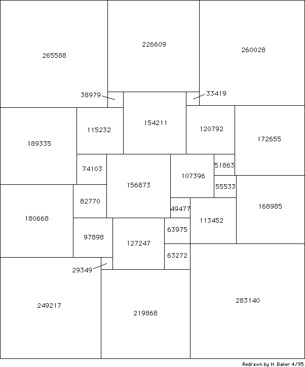

Figure 3(b). [Problem 80] A squared rectangle found by Schroeppel using "String Handling Interpretive Translator", a string processing language written by Samson. Sides are
3 2 2
884808 = 2 * 3 * 12289 and 752225 = 5 * 30089;
semiperimeter is 1637033 = 419 * 3907.
This has 28 squares, which is more than most published squared
rectangles.
Figure 3(b). [Problem 80] A squared rectangle found by Schroeppel using "String Handling Interpretive Translator", a string processing language written by Samson. Sides are
3 2 2
884808 = 2 * 3 * 12289 and 752225 = 5 * 30089;
semiperimeter is 1637033 = 419 * 3907.
This has 28 squares, which is more than most published squared
rectangles.[Retyped and formatted in html ('Web browser format) by Henry Baker, April, 1995.]